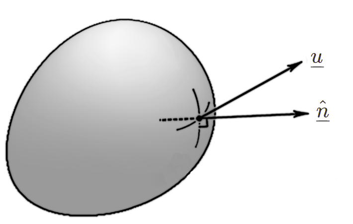

4. Navier-Stokes Equations¶
4.1. The continuum hypothesis¶
So that we can use the tools of calculus, we treat the fluid as if it were continuous in structure and we regard physical quantities as locally uniform. This also means we can treat gases and liquids in the same way, since the equations of motion are independent of the particle structure.
An illustration of the idea is shown below, applied to measurements of density. We ignore molecular fluctuations, and consider a locally averaged measure of density based on the mean free path between atoms.

In actuality, the concept of “density” does not apply very meaningfully at the microscopic level, since the density at each point is defined by either being “inside” or “outside” an atom.
4.2. Mass transport¶
Consider the mass flow through an arbitrary volume of fluid at a fixed location, like the “bag” shown in the image on the left. We assume matter is neither created or destroyed.
{kind=link}
The following statement says that the change in mass of the fluid parcel is equal to the net mass flow into the enclosing surface \(\delta A\) per unit time.
The negative sign appearing in the formula occurs because the normal direction is outward from the surface, as illustrated in the image.
The time derivative on the left hand side of equation (4.1) can be brought inside the integral because for a fixed fluid volume the spatial and temporal variables are independent. On the right hand side the divergence theorem can be used to write the surface integral as a volume integral. Bringing all terms over to the left then gives
and since the volume \(\delta V\) is arbitrary this requires that the integrand itself is zero. By using the product rule to expand the intergrand, we can finally obtain
Important case: Mass transport for incompressible flow
If the density of each fluid particle does not change as it moves around, then the flow is said to be incompressible. In that case, \(\frac{D\rho}{D t}=0\), which leads to the following condition for incompressible flow :
In practice, fluid phenomena that are well below the speed of sound can be treated as incompressible
4.3. Cauchy stress theorem¶
“Stress” is a measure of the internal forces, such as pressure or friction acting between neighbouring fluid elements. We cannot discuss stress without first defining a particular surface that the stress acts on, since friction and pressure depend on the surface orientation.
However, the stress for a given surface can be expressed as a vector of components parallel to each coordinate direction, and according to Cauchy’s stress theorem, the stress vector on any plane through a point can be found by knowing the stress vector on each of three mutually perpendicular planes. We will consider planes perpendicular to the coordinate axes.
The Cauchy stress tensor (deviatoric stress tensor)
defines the normal and shear stress components $\(\sigma_{i,j}\)$ acting on a plane perpendicular to each axis, as illustrated below:
stress tensor
We now consider the stress vector \(\underline{T}^{(\underline{n})}\) acting on an arbitrary surface \(\delta{A}\) perpendicular to unit vector \(\hat{\underline{n}}\) as illustrated in the figure below.
cauchy stress
We may apply Newton’s second law to the tetrahedron shown, allowing the mass of the tetrahedron to approach zero (so that the sum of the forces also approaches zero):
where \(\delta A_j\) is the projection of \(\delta A\) onto the illustrated face, given by \(\delta A_j=\hat{\underline{n}}.\underline{e}_j\delta A=\hat{\underline{n}}_j\delta A.\)
This gives
4.4. Conservation of momentum¶
By Newton’s second law, the change in momentum is given by the sum of all forces acting on the volume:
in which
\(\rho\underline{F}\) is the “body force” per unit volume, such as gravitational, magnetic or Coriolis forces, \(\underline{\sigma}(t,\underline{x}).\hat{\underline{n}}\) is the deviatoric stress tensor.
This time, we have to choose a “material volume”, meaning one that moves with the fluid, so that we track the same particles. In that case \(\rho\mathrm{d}V\) is constant so we may rewrite the left-hand side as
We use the divergence theorem again on the last term, and combine the three integrals for our arbitrary material volume $\(\delta V\)$ to obtain
The Cauchy stress tensor $\(\underline{\sigma}\)$ can be split up to separate normal stress components (pressure) and shear stress components. This gives the result
Newtonian vs non-Newtonian fluids In a so-called “Newtonian” fluid the shear stress is linearly proportional to the velocity gradient, which may be written as
The figure below illustrates a flow profile with a strong velocity gradient \(\displaystyle \frac{\partial v_1}{\partial x_2}\). We will see later on that this type of flow profile tends to arise near to a solid boundary, due to fluid particles “sticking” to the boundary.
a strong shear
The constant of proportionality \(\mu\) appearing in the formula above is called the viscosity (or “dynamic viscosity”), measured in \(\mathrm{Pa.s}\) (Pascal-seconds). It measures the tendency for fluid layers to be dragged by their neighbours and can therefore be thought of as a measure of the “diffusivity of momentum”. It is a material property of the fluid under particular conditions (e.g. temperature). A list of viscosities of common fluids (and some not-so-common) can be found at: https://en.wikipedia.org/wiki/List_of_viscosities
Loosely speaking, you can think of viscosity as a measure of the fluid’s thickness, or how easily it flows. Honey, for example, has a much higher viscosity than water so it flows slowly when you try to pour it. A more accurate way to understand and measure viscosity is to consider an object such as a marble dropped into a cylinder of the fluid under gravity. In a low viscosity fluid the marble will reach the bottom of the fluid cylinder quickly, as its momentum is not substantially diffused by the fluid, whilst in a high viscosity fluid the marble will take a long time to reach the bottom as its momentum is diffused to surrounding layers of fluid.
The Newtonian fluid relationship law is an experimental result, much like the constitutive law \(F=\mu R\) that relates the resisting force between two solid surfaces to the normal reaction. It holds for a wide range of fluids under a wide range of conditions, including air, water and most oils and syrups. However, it does not hold for all fluids under all conditions.
Non-Newtonian fluids are those which have nonlinear relationship between stress and velocity gradient. Examples of shear-thinning fluids include paint, whipped cream, blood, saliva*, lava and toothpaste, whilst examples of shear-thickening fluid is oobleck (a mixture of cornstarch and water), and the synovial fluid that lubricates our joints. Some fluids are non-Newtonian only above/below a certain threshold.
*Due to the abundance of long-chain polymers in biological fluids, Newtonian behaviour may be the exception in biological contexts, rather than the rule.
4.5. Fun demonstrations:¶
How to put ketchup on your fries like a pro: https://www.youtube.com/watch?v=KB43fM_ozKQ Oobleck in a pool : https://thekidshouldseethis.com/post/oobleck-pool Oobleck on a speaker: https://www.youtube.com/watch?v=3zoTKXXNQIU Kaye effect for shampoos: https://www.youtube.com/watch?v=eADS4oDTS4o Boger fluids: https://www.insidescience.org/video/what-boger-fluid
Navier-Stokes for Newtonian fluids For a Newtonian fluid with zero body force,
where \(p\) is the hydrostatic pressure (mean normal stress), and \(\nu=\frac{\mu}{\rho}\) is called the kinematic viscosity.
The equations can be non-dimensionalised by scaling quantities with respect to characteristic scales of velocity \(U\) and length \(L\) (see next subchapter) to obtain the final conservation of momentum equations given in the box below.
Navier Stokes equations
For an incompressible, Newtonian fluid, in the absence of any body forces:
where \(\mathrm{Re}=\frac{U L}{\nu}\) is a parameter called the Reynolds number.
The first equation (conservation of mass) represents a balance between convective acceleration, pressure forces and viscous diffusion. The second equation represents the incompressibility condition.
Written out in full, these equations are
It is helpful to classify the study of fluids as follows:
Incompressible Compressible Inviscid This course Acoustics (high speed) Viscous This course in part Research only!
4.6. Challenge yourself:¶
After you have read the notes for this subsection, try to complete the worksheet below without looking at any resources
worksheet 1.docx
Big idea: Conservation of mass and momentum
The equations governing the motion of fluids are the Navier-Stokes equations, for conservation of mass and momentum. They apply at the macroscopic level, where quantities such as the fluid velocity and density are treated as continuous.
For fluid motions that occur well below the speed of sound, the effects of compressibility can be neglected, and in that case the conservation of mass equation simplifies to the incompressibility condition \(\nabla.\underline{v}=0\), where \(\underline{v}\) is the velocity field.
The conservation of momentum equation represents a balance between convective acceleration, pressure forces and the diffusion of momentum to neighbouring fluid elements. A wide class of so-called “Newtonian” fluids exhibit a linear relationship between the shear stress and the velocity gradient, in which the constant of proportionality is a material quantity, called the viscosity.
By non-dimensionalising the equations of motion, we can consider motion on different length/velocity scales or in fluids of different viscosity all by varying a single parameter, called the Reynolds number \(\mathrm{Re}\).